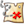

Hike

NM
This app allows you to import hikes from the nmhikes.com site or from a stored gpx file - or you can draw a rectangular area for use offline.
Once offline, you can turn on tracking and download your track file!